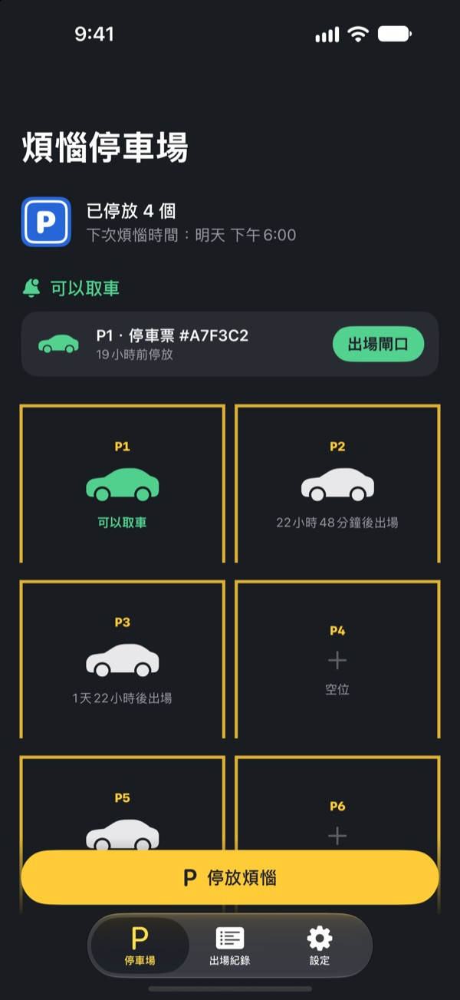
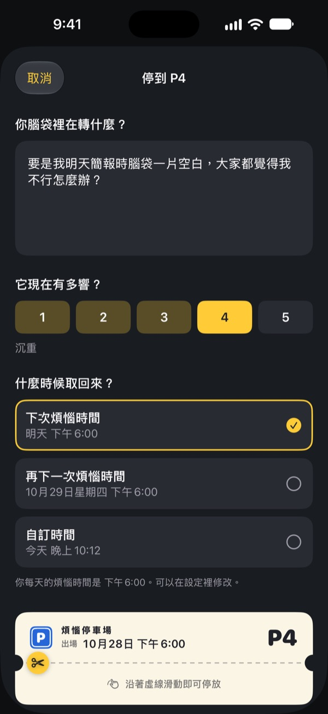
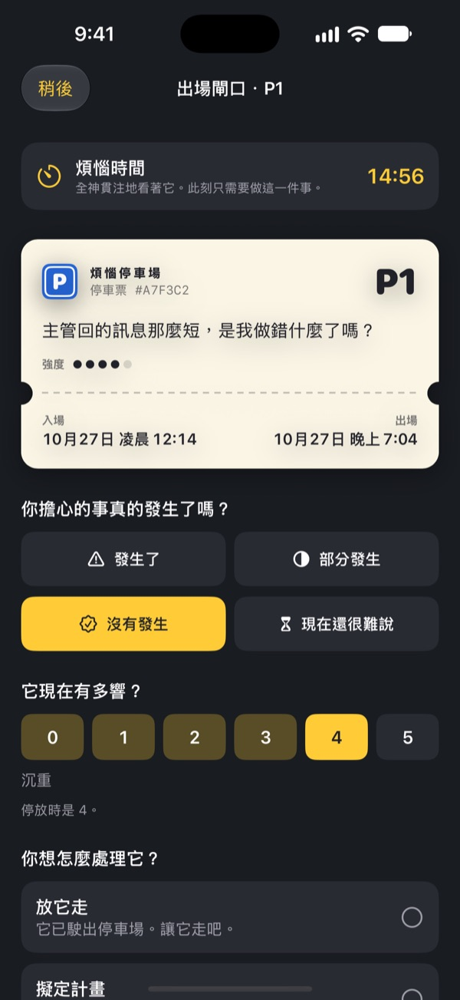
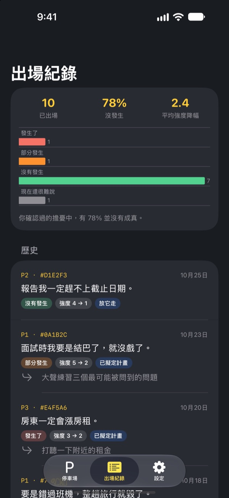

煩惱，
先停在這裡
把睡前在腦中打轉的煩惱寫在停車券上交給我們。到了煩惱時間再還給你。在那之前，你不用一直帶著它。
所有功能免費，沒有廣告，也不需要帳號。

停一個煩惱看看
可以直接用範例，也可以寫下你此刻在想的事。停好後會變模糊，到煩惱時間再拿出來看。
一關燈，腦袋就開始轉？
才剛躺下，白天說過的一句話、明天的會議、還沒回的訊息，就一個接一個冒出來。越叫自己別想，聲音越大。煩惱停車場不會要你硬把煩惱趕走。把它寫下來，給它一個車位，再另外留出時間面對。
寫下來，就從腦中放下
照它在腦中聽起來的樣子寫下來，再選它現在有多響，從 1 到 5。撕下停車券，煩惱就模糊地留在停車場裡。
如果它又繞回來，就告訴它：你已經有車位了。會輪到你的，但不是現在。

煩惱時間，只面對 15 分鐘
每天到了煩惱時間就會收到提醒。在出場閘口重讀一次，看看它是不是真的發生了、現在還有多響。
接著放下它、把它變成一個小小的下一步，或是再停到下一個煩惱時間。

看見煩惱有幾次成真
出場的煩惱越多，出場紀錄越能清楚顯示真正發生的比例，以及強度降低了多少。
煩惱總是把未來想得比實際更糟。紀錄越多，你就越不容易相信下一個煩惱。

三個步驟就能開始
- 1
選好煩惱時間
第一次開啟時，選一個每天面對煩惱的時間。之後可以在設定裡更改。
- 2
停一個真實的煩惱
馬上停好你現在的煩惱，感受停車前後強度有什麼不同。
- 3
允許取車提醒
到了煩惱時間，會收到一則只寫著車位號碼的提醒。
為什麼有效
- 只在固定時間煩惱
- 把煩惱移到每天一段短暫煩惱時間的人，煩惱的時間變少，焦慮和睡眠問題也減輕了。（Borkovec 等, 1983；McGowan & Behar, 2013）
- 寫下來，才能放下
- 訂出具體計畫後，未完成的事比較不會闖進思緒；睡前花 5 分鐘寫下待辦事項的人更快入睡。（Masicampo & Baumeister, 2011；Scullin 等, 2018）
- 確認是否真的發生
- 長期容易煩惱的人記錄自己的煩惱後發現，91% 並沒有真的發生。（LaFreniere & Newman, 2020）
煩惱停車場以「延後煩惱」為基礎，這是認知行為治療（CBT）中研究了數十年的技巧。
所有功能都免費
免費
- 車位數量不限
- 每天的煩惱時間提醒，自選出場時間
- 出場閘口與出場紀錄
- 出場洞察：真正發生的比例、強度的變化
小額贊助（隨意）
- 如果覺得有幫助，可以給開發者一點小小的贊助
- 小、中、大三種金額任選
贊助不會解鎖任何功能。不贊助也能使用全部功能。
沒有廣告、帳號、伺服器和分析工具。你寫下的一切都只存在你的 iPhone 上。
常見問題
要怎麼更改煩惱時間？
在設定標籤頁的煩惱時間裡更改。新時間會套用到之後停放的煩惱，已經停好的煩惱維持原本的出場時間。
收不到取車提醒。
請檢查設定標籤頁裡的通知。若顯示通知已關閉，點「開啟 iOS 設定」把通知打開。開著專注模式或勿擾模式時，提醒可能會靜音送達。即使沒收到提醒，到時間的煩惱也會在停車場裡顯示為可以出場。
通知會顯示我的煩惱內容嗎？
不會。通知只會顯示車位號碼，例如「P3 可以出場了」。煩惱內容只有打開 App 進入出場閘口時才看得到。
可以在煩惱時間之前先看嗎？
在停車場點那台車，選「現在就送去出場閘口」。不過延後的效果來自等待，大部分煩惱到了煩惱時間都會顯得小一點。
紀錄可以轉到新 iPhone 嗎？
所有紀錄只存在 iPhone 裡，沒有帳號和同步功能。用 iCloud 或電腦備份回復新 iPhone，或使用快速開始，紀錄會和其他 App 的資料一起轉移。
想刪除紀錄怎麼辦？
在出場紀錄標籤頁把某一筆往左滑就能刪除。刪除 App 會一併清除所有紀錄。
這是心理治療嗎？
煩惱停車場是以 CBT「延後煩惱」為基礎的自我照顧工具。它不是醫療器材，也不能取代專業的診斷或治療。
真的很難受的時候怎麼辦？
如果煩惱占據了你的生活，或你有傷害自己的念頭，請不要一個人撐著。台灣可撥打 1925 安心專線，24 小時免費；緊急時請撥 119。
有任何問題或建議，歡迎來信 leeo@kakao.com。